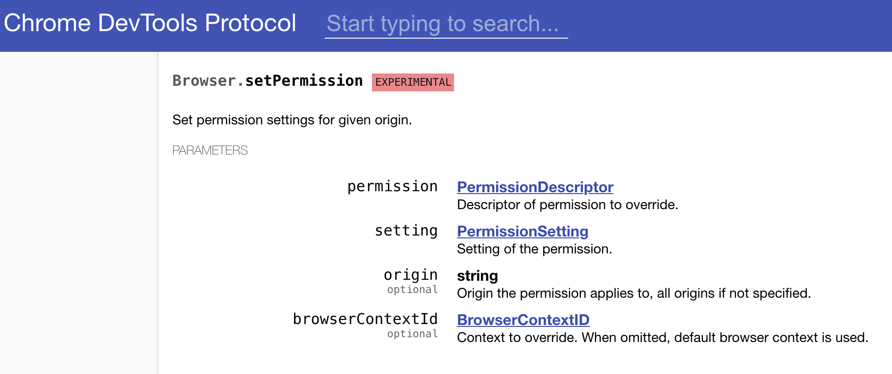
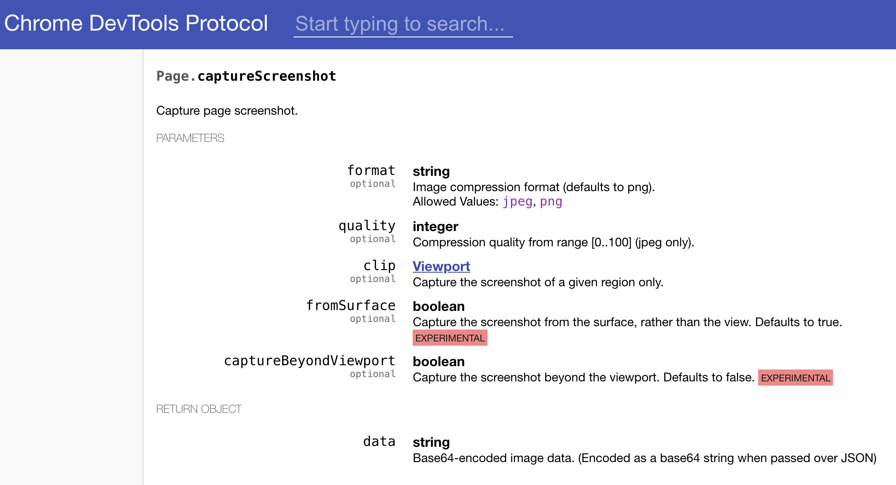
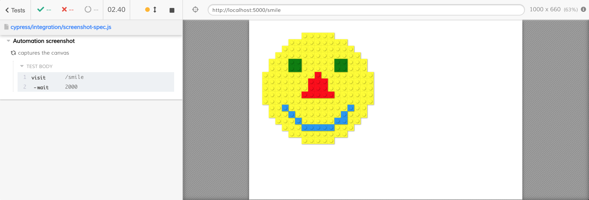
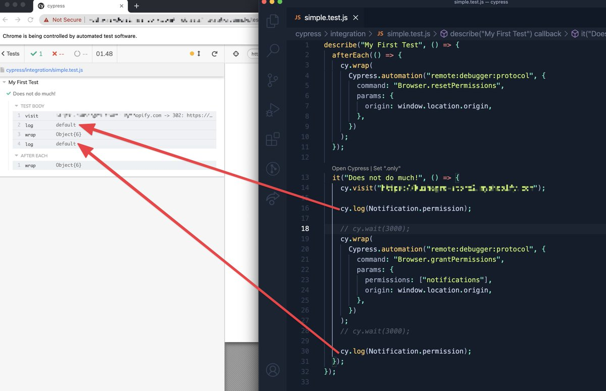

When Cypress controls a Chromium browser, it has an open remote interface connection between Cypress and the browser. Typically, Cypress uses it to visit the site and perform special operations like setting cookies, or setting the file downloads folder. In this blog post I will show how to use Cypress.automation command to set the browser permission and to take native screenshot images.
- Set the browser permission
- Saving native screenshots
- Printing PDF of the page
- Limitation
- Update 1: printing the current permission
- See also
Set the browser permission
This code example comes from the recipe in the cypress-example-recipes repo.
If we want to access the clipboard from the test, the browser asks the user for permission. The test can always query the current permission
1 | it('can be queried in Chrome', { browser: 'chrome' }, () => { |
If we look at the Chrome Debugger Protocol, we can see that there is a way to call a command to set the permission using Browser.setPermission command. By granting the test runner the permission, the browser skips showing the "should this site have access to the clipboard?" user prompt.

To call this command from the Cypress test, use Cypress.automation command:
1 | // only the Chrome CDP is supported |
The promise-returning Cypress.automation command is very low-level, thus it is NOT automatically inserted into the Cypress test command chain. To make the test "wait" for the promise to resolve, use the cy.wrap command:
1 | cy.wrap(Cypress.automation('remote:debugger:protocol', { |
Tip: if you want to run the automation command after other Cypress commands, make sure to return the the Cypress.automation(...) promise from the .then callback; we will see such example in the next section.
You can watch setting the browser permission in this video below:
Saving native screenshots
This example comes from the bahmutov/monalego repo.
If you want to save the application page without any visual artifacts introduced by cy.screenshot command, you can use the Page.captureScreenshot CDP command.

Let's say we want to capture the screenshot after a two second delay. We place the Cypress.automation inside a .then callback after the cy.wait command. The callback automatically waits for the returned promise to resolve.
1 | cy.visit('/smile') |
The CDP documentation says the method returns an object with data property that is base64-encoded PNG image. We can grab this property and use cy.writeFile command to save the image.
1 | cy.visit('/smile') |
The test runs and saves and image like this one:

If you want to capture only a portion of the page, grab the bounding box of an element and pass it as a parameter.
Limitation
As of Cypress v7, you can only execute a CDP automation command, not to subscribe to the browser events. If you need to subscribe, you would need to open your own remote interface connection, just like cypress-log-to-output does.
Track the issue #7942 for any updates to this feature in Cypress.
Yet, despite of this limitation right now, think what having an automation command in Cypress means - everyone that Puppeteer can do, Cypress can do too - it is the same Chrome Debugger Protocol connection after all! You want real click events? You want hover? You want a tab? No problem, see cypress-real-events for example.
Update 1: printing the current permission
Recently a user asked me why the browser permission stays unchanged even after Cypress.automation call. Here is the picture of the problem from the tweet:

Do you see the problem? The cy.wrap(...) will correctly set the permission asynchronously. Meanwhile before and after we have cy.log(Notification.permission) calls that are passing their current argument by value. Imagine the permission value is prompt at the start. Then after the test runs through the commands and schedules them to run, the arguments to the cy.log calls in both cases will be prompt
1 | # Cypress commands scheduled to execute |
Thus to correctly print the updated permission, we need to call cy.log after the Cypress.automation has finished its execution and the Notification.permission has a new value.
1 | cy.visit('/') |
In fact, the above code has a race condition in the first cy.log vs Cypress.automation promise. The promise to grant the browser permission starts running as soon as it is created. Thus commands before cy.wrap could get the updated permission! I would rewrite the above code to be safer and to call Cypress.automation only after the first cy.log command.
1 | cy.visit('/') |
Since the cy.then command is chained after the cy.log command, the .then creates the Promise and waits for the returned promise from Cypress.automation to complete. This even eliminates the need for cy.wrap command.